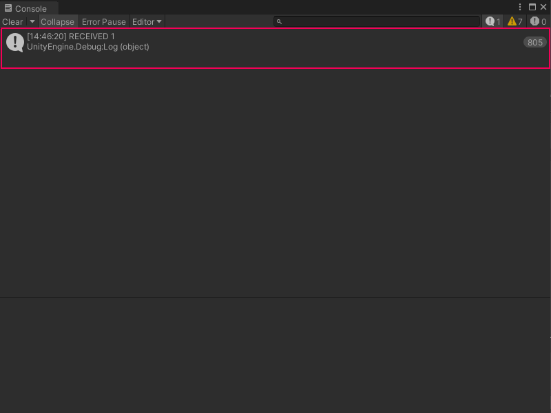

Listen to a Custom Scripting Event from a C# script¶
You can use a C# script to listen for or receive a Custom Scripting Event from a Script Graph. You can use an Event receiver script to execute additional logic in your application.
[!NOTE] Before you can create a listener for a Custom Scripting Event node, you must create a Custom Scripting Event node and its trigger. [!includetasks-note-end] and Create a Custom Scripting Event Sender node.
To receive a Custom Scripting Event from a Script Graph:
[!includeopen-project-window]
[!includeright-click-project]
[!includecreate-c-script-project]
Enter a name, such as
EventReceiver, for the new script file.Press Enter.
[!includeopen-new-external-code]
In your external editor, copy and paste the following code into your C# script:
using Unity.VisualScripting; using UnityEngine; public class EventReceiver : MonoBehaviour { void Start() { EventBus.Register<int>(EventNames.MyCustomEvent, i => { Debug.Log("RECEIVED " + i); }); } }
[!includesave-script]
[!includereturn-unity]
[!includeopen-hierarchy-window]
Do one of the following in the Hierarchy window:
Select an existing GameObject where you want to attach the new script.
Select Add New (+) and in the menu, select a new GameObject to add to your scene from any of the available options. You can also right-click anywhere in the Hierarchy window and select the same options in the context menu.
[!includeopen-inspector-window]
Select Add Component.
In the Component menu, enter the name of the script file.
Select it to add it to the GameObject.
Select Play from the Unity Editor’s Toolbar to enter Play mode. If you have a Custom Scripting Event Sender node or a C# script to trigger your Event, you can trigger your Custom Scripting Event.
The
EventReceiverscript logs the following message to the console every time the Event is triggered, as shown in the following image.